Working with Volumes in OpenVCAD#
This guide shows how to use sampled volumetric data inside OpenVCAD’s Python workflow. The key idea is simple: a volume is not a separate kind of geometry. Instead, OpenVCAD loads the sampled data as a field, wraps that field in an attribute, and then attaches the attribute to ordinary OpenVCAD geometry.
If you have not already done so, work through Getting Started, Functional grading, and the Attribute modifier and resolver guide first. This guide assumes you are already comfortable with basic nodes, attributes, attribute translation, and the render preview.
All scripts for this guide live under examples/volumes/. In the snippets below, assume the VDB file or dicom/ folder sits next to the script, and run each script from that example directory.
Mental Model#
At the Python level, the workflow looks like this:
Load a sampled dataset from disk (usually a VDB file, PNG images or a DICOM stack), or build one from a NumPy array.
Wrap that dataset in an attribute such as
pv.FloatAttribute(...).Attach the attribute to normal OpenVCAD geometry.
Visualize the sampled field directly in the renderer, or translate it into another attribute such as
COLOR_RGBAfor a downstream compiler.
That is the pattern you will see in all five lessons.
Lesson 1: Load a Density Volume and Render It#
This first lesson keeps the workflow as small as possible. We load a single density grid from a VDB file, wrap it as a FloatAttribute, attach it to a cube, and render the DENSITY field directly.
OpenVDB is an open-source format and library for sparse volumetric data. Instead of storing a dense 3D array everywhere, it stores only the active parts of the volume efficiently, which makes it a good fit for fields such as smoke, fire, fog, signed distance fields, and medical data. A single .vdb file can also hold multiple named grids, which is why later lessons can load both density and temperature from the same file.
The example lives in examples/volumes/vdb/basic_density/. Run it from that directory so basic_density.vdb is resolved locally.
import pyvcad as pv
import pyvcad_rendering as viz
density_volume = pv.vdb_loader.load_float_volume("basic_density.vdb", "density", center=True)
density_attribute = pv.FloatAttribute(density_volume)
volume_bbox_min, volume_bbox_max = density_volume.bounding_box()
cube = pv.RectPrism.FromMinAndMax(volume_bbox_min, volume_bbox_max)
cube.set_attribute(pv.DefaultAttributes.DENSITY, density_attribute)
root = cube
viz.Render(root)
There are only three volume-specific steps here:
pv.vdb_loader.load_float_volume(...)loads thedensitygrid from disk.pv.FloatAttribute(density_volume)turns the sampled data into an OpenVCAD attribute.cube.set_attribute(...)attaches that field to a normal piece of geometry.
When you run the script from examples/volumes/vdb/basic_density/, select the DENSITY attribute in the renderer to inspect the sampled field inside the cube.
The tree diagram below makes the carrier pattern explicit: the RectPrism is still the geometry root, while the sampled density grid sits below it as a volume-backed DENSITY attribute.
Tree / DAG Structure
Legend
The figure below is the direct DENSITY preview of that setup. This small OpenVDB file was generated as a smooth radial-falloff density field normalized to the range 0 to 1, then saved as a single density grid. The script simply loads that grid and attaches it to the cube as DENSITY. If you want more sample VDB datasets to experiment with, OpenVDB provides additional example files on its download page.
DENSITY field
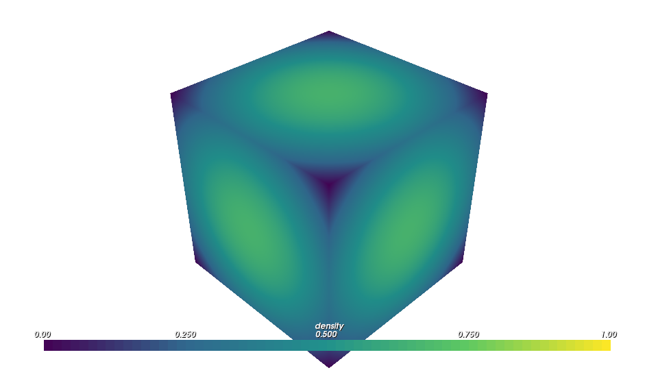
Lesson 2: PNG Images to Color Volumes#
PNG data follows the same adapter pattern as VDB and DICOM: load sampled data, wrap it as an attribute, attach it to geometry. The difference is that PNG sources are already color fields, so you can attach COLOR_RGB or COLOR_RGBA directly.
OpenVCAD supports two PNG import modes:
Single image with depth: load one PNG and repeat it along z until a requested
depth_mmis reached.Image stack: load an ordered directory of PNG slices as a true 3D color volume.
In both cases, physical scale comes from the user-specified voxel_size (x, y, z in mm).
Color mode behavior (COLOR_RGB vs COLOR_RGBA)#
When importing PNG data, choose a target mode:
COLOR_RGB: if source PNG has alpha, alpha is dropped.COLOR_RGBA: if source PNG has no alpha channel, alpha is synthesized as fully opaque (1.0).COLOR_RGBA: if source PNG has alpha, the alpha values are preserved.
Single-image example (logo repeated through depth)#
The example script lives in examples/volumes/png/single_image/maclab_logo_color_rgba.py.
import os
import pyvcad as pv
import pyvcad_rendering as viz
script_dir = os.path.dirname(os.path.abspath(__file__))
image_path = os.path.join(script_dir, "maclab_logo.png")
png_loader = pv.PNGLoader.FromImage(
image_path,
pv.Vec3(0.25, 0.25, 0.25),
10.0,
pv.PNGColorMode.COLOR_RGBA,
center=True,
)
color_volume = png_loader.as_rgba_volume()
bbox_min, bbox_max = color_volume.bounding_box()
carrier = pv.RectPrism.FromMinAndMax(bbox_min, bbox_max)
carrier.set_attribute(pv.DefaultAttributes.COLOR_RGBA, pv.Vec4Attribute(color_volume))
root = carrier
viz.Render(root)
Stack example (smooth color + transparency pyramid)#
The stack example lives in examples/volumes/png/image_stack/pyramid_color_rgba.py, using committed deterministic slice data under examples/volumes/png/image_stack/pyramid_stack/.
import os
import pyvcad as pv
import pyvcad_rendering as viz
script_dir = os.path.dirname(os.path.abspath(__file__))
stack_dir = os.path.join(script_dir, "pyramid_stack")
png_loader = pv.PNGLoader.FromStack(
stack_dir,
pv.Vec3(0.35, 0.35, 0.35),
pv.PNGColorMode.COLOR_RGBA,
center=True,
)
color_volume = png_loader.as_rgba_volume()
bbox_min, bbox_max = color_volume.bounding_box()
carrier = pv.RectPrism.FromMinAndMax(bbox_min, bbox_max)
carrier.set_attribute(pv.DefaultAttributes.COLOR_RGBA, pv.Vec4Attribute(color_volume))
root = carrier
viz.Render(root)
The figures below show these two workflows in volumetric rendering mode.
Single-image depth repeat (`COLOR_RGBA`)
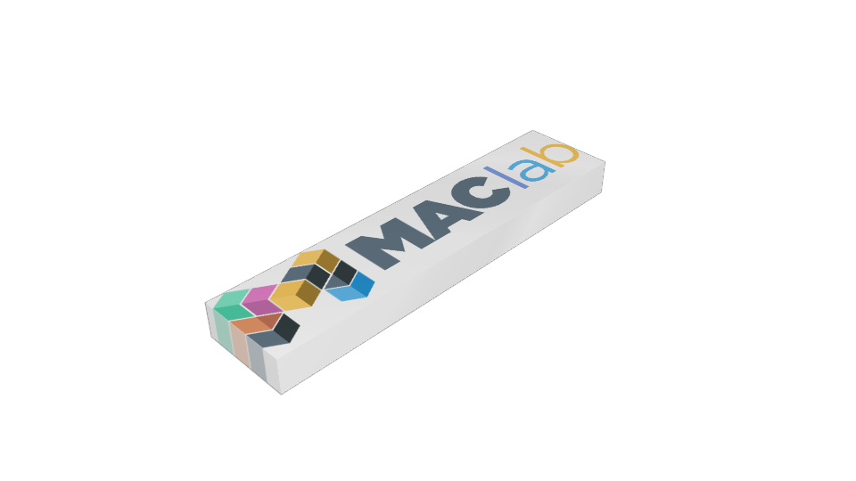
Image stack (`COLOR_RGBA`)
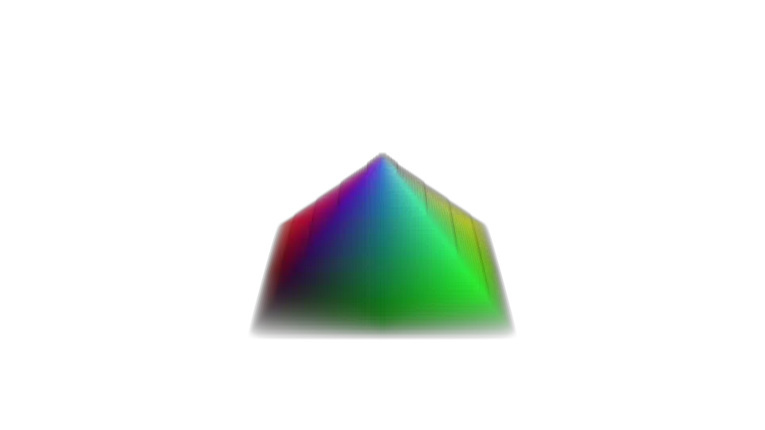
Lesson 3: Fire Volumes to Printable RGBA#
The fire example shows the full volume workflow that matters for fabrication: multiple sampled fields are loaded, attached to geometry, then translated into COLOR_RGBA for a compiler.
The full example lives in examples/volumes/vdb/fire/. Run fire.py from that directory so the local fire.vdb file is picked up directly.
The fire.vdb file used here is an example dataset from the OpenVDB download page. It works well for this lesson because it already contains the two named sparse grids we want to discuss: temperature and density.
What is stored in fire.vdb#
This file carries two scalar grids:
temperature: how hot the simulated fire is at each pointdensity: how much smoke or flame material is present at each point
Together, those two fields describe both the structure of the plume and how it should look. density tells us where the fire and smoke exist and how thick they are, while temperature gives us the second signal we need to drive color. In this example, one field tells us where the material is and the other tells us how to color it.
Both grids are loaded the same way:
density_volume = pv.vdb_loader.load_float_volume("fire.vdb", "density")
density_attribute = pv.FloatAttribute(density_volume)
temperature_volume = pv.vdb_loader.load_float_volume("fire.vdb", "temperature")
temperature_attribute = pv.FloatAttribute(temperature_volume)
The example then builds a simple carrier object from the volume bounds and attaches both attributes to it:
volume_bbox_min, volume_bbox_max = temperature_volume.bounding_box()
object = pv.RectPrism.FromMinAndMax(volume_bbox_min, volume_bbox_max)
object.set_attribute(pv.DefaultAttributes.DENSITY, density_attribute)
object.set_attribute(pv.DefaultAttributes.TEMPERATURE, temperature_attribute)
That pattern is the same one from Lesson 1. The only difference is that we now have two sampled scalar fields on the same object instead of one.
Translating the fields into COLOR_RGBA#
The downstream color pipeline does not use temperature and density directly. Instead, the example translates them into a printable COLOR_RGBA field with an AttributeModifier.
If that wrapper is new to you, start with the opening lesson of the Attribute Modifier and Resolver Guide. The fire example uses the same mechanism, but with sampled volume-backed attributes instead of analytic expressions.
The important part is the converter setup:
entries = [
pv.LookupTableEntry(
[(row[0][0], row[0][1]), (row[2][0], row[2][1])],
[row[1], row[3]]
)
for row in new_map
]
mod = pv.LookupTableConverter(
[pv.DefaultAttributes.TEMPERATURE, pv.DefaultAttributes.DENSITY],
[pv.DefaultAttributes.COLOR_RGBA],
entries,
pv.InterpolationMode.STEP
)
root = pv.AttributeModifier(mod, object)
The tree diagram below shows the full teaching workflow: two sampled scalar fields attach to one carrier object, and an AttributeModifier turns them into the derived COLOR_RGBA field used for rendering and printing.
Tree / DAG Structure
Legend
Conceptually, this lookup table is meant to mimic how fire changes visually:
low temperature and low density stay close to transparent smoke
hotter regions shift through red and orange into yellow-white
higher density increases opacity so the core of the flame reads as fuller and brighter
The result is a COLOR_RGBA field that can be previewed directly in OpenVCAD and then sent to the Color Inkjet Compiler through pyvcad_compilers.ColorInkjetCompiler.
The two sweep animations below show the raw source fields before that conversion. The temperature sweep makes it easy to see where the hottest parts of the plume sit, while the density sweep shows where the smoke and flame mass are concentrated along the length of the fire volume.
Temperature sweep
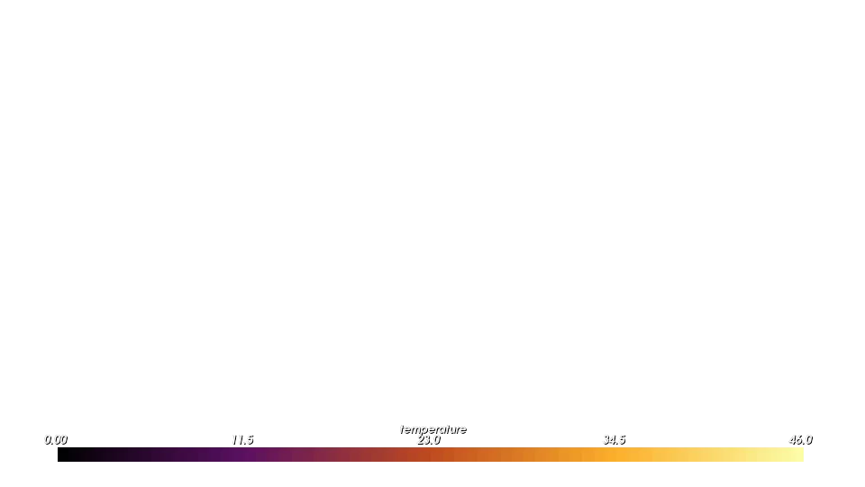
Density sweep
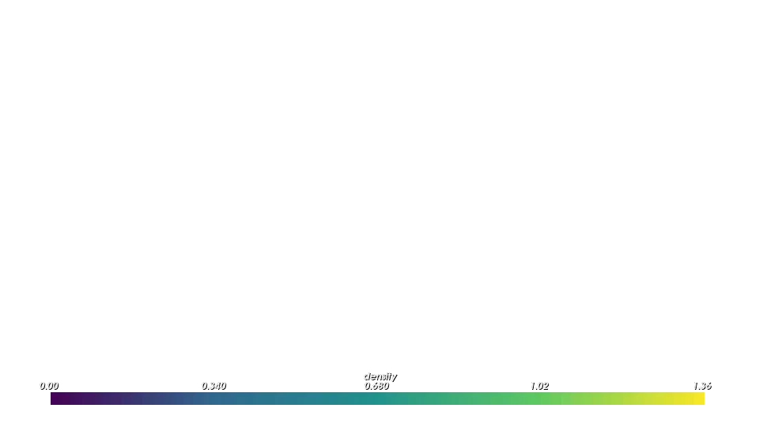
The turntable below shows the final COLOR_RGBA result after the lookup-table mapping. This is the stage that matters for fabrication: by this point the volume is no longer just a set of scalar fields, but a printable color-and-opacity field.
Final COLOR_RGBA field

For both the fire and tumor workflows in this guide, the final COLOR_RGBA field was compiled with the Color Inkjet Compiler and printed on a Stratasys J750 PolyJet printer using Vero Cyan Vivid, Vero Yellow Vivid, Vero Magenta Vivid, Vero Black Plus, Vero Pure White, and Vero Clear materials.
The photo below shows the physical fire print from that pipeline. It lets you compare the rendered COLOR_RGBA result above with the final printed object.
Printed result
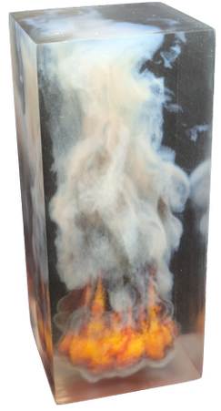
Lesson 4: CT Head Scan to COLOR_RGBA#
The tumor example uses the same overall workflow, but now the source data is a DICOM stack instead of a VDB file.
The full example lives in examples/volumes/imaging/medical/mr_brain_tumor/. For the guide snippets, assume the dicom/ stack folder is next to tumor.py and run the script from that directory. This example also differs from Lessons 1 and 2 because it imports a mesh to act as the bounding volume. In the VDB examples, we used simple boxes built from the volume bounds. Here, the outer boundary is an anatomical surface mesh created with segmentation operations in 3D Slicer and exported as MRTumor.stl.
What the DICOM stack represents#
DICOM is the standard file format used for medical imaging. In a CT workflow like this one, the stack is a sequence of 2D slices taken through the body. OpenVCAD reads those slices, reconstructs the 3D volume, and exposes the sampled values as a continuous field. The CT scan and segmentation-derived mesh used in this example are sample data from the 3D Slicer ecosystem.
For CT data, those sampled values are Hounsfield units (HU). HU is a radiodensity scale:
lower values correspond to air-like regions
mid-range values capture soft tissue
higher values correspond to denser structures such as bone
The example begins by loading the stack and converting it to a sampled float attribute:
dicom_loader = pv.DICOMLoader("dicom")
dicom_volume = dicom_loader.as_volume()
dicom_attribute = pv.FloatAttribute(dicom_volume)
That attribute is then attached to the head geometry as HU.
Slice files are stacked in Instance Number (0020,0013) order whenever every file in the directory
carries a unique one, and otherwise in natural, digit-aware filename order — so 1/2/10,
001/002/010, slice_0098 and IMG_0000_0001 style exports all reconstruct correctly without any
extra arguments. If an export needs help, pass slice_order to force a strategy
(pv.DICOMSliceOrder.INSTANCE_NUMBER, SLICE_POSITION or FILENAME) and filename_prefix to
ignore a leading part of the filename whose digits should not take part in the ordering:
dicom_loader = pv.DICOMLoader(
"dicom",
slice_order=pv.DICOMSliceOrder.FILENAME,
filename_prefix="scan2024_",
)
The head geometry itself is important here. Instead of attaching the attribute to a simple rectangular carrier, the example uses the segmented mesh as the object that receives the volume-backed HU field. That gives the volume data a more meaningful anatomical boundary.
Mapping HU to COLOR_RGBA#
The medical helper builds a color-and-opacity map across the HU range we want to emphasize:
opacity_function = lambda t: 0.6 * (1 - t) + 0.15 * t
hu_color_map = med.color_maps.create_linear_gradient_hu_map(
75,
190,
palette=med.color_maps.get_color_palette(color_palette),
steps=30,
opacity_function=opacity_function
)
That map is then applied with the same LookupTableConverter + AttributeModifier pattern from Lesson 2:
mod = pv.LookupTableConverter(
[pv.DefaultAttributes.HU],
[pv.DefaultAttributes.COLOR_RGBA],
hu_color_map,
pv.InterpolationMode.STEP
)
attr_mod = pv.AttributeModifier(mod, head_union)
The example clips the final model to the right half of the head so the interior structures remain readable in a volumetric render. Below, the turntable keeps that clipped view, while the Z sweep shows the full head volume.
The turntable is the easiest way to read the final mapped result as an object: it shows how the HU-to-COLOR_RGBA mapping separates outer structure from the denser internal regions. The sweep complements that view by moving through the full head volume slice by slice so you can see how the mapped field changes through the scan depth.
Right-half turntable
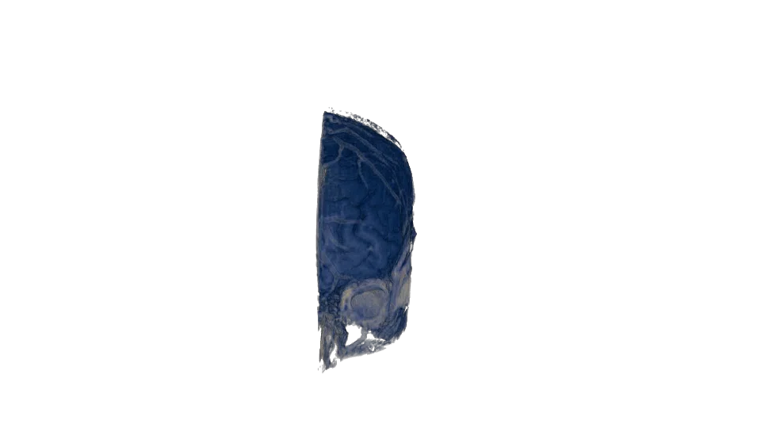
Whole-head Z sweep
Like the fire example, physical prints of this tumor workflow were produced from the COLOR_RGBA field with the Color Inkjet Compiler on a Stratasys J750 PolyJet printer using Vero Cyan Vivid, Vero Yellow Vivid, Vero Magenta Vivid, Vero Black Plus, Vero Pure White, and Vero Clear materials. The renders above are previews of that same printable field.
Lesson 5: Volumes from NumPy Arrays#
The loaders in Lessons 1–4 each read one file format. pv.FloatVolume.from_array(...) and pv.Vec3sVolume.from_array(...) take a NumPy array instead, so anything you can get into NumPy becomes an OpenVCAD volume: NetCDF or HDF5 simulation output, cryo-EM maps, raw binary bricks, or a field you compute yourself. Preprocessing such as cropping, smoothing, normalizing or combining fields also happens in NumPy, before the data reaches OpenVCAD.
This lesson builds three synthetic fields on one grid and attaches each as a different kind of attribute:
a scalar field (
TEMPERATURE) loaded withFloatVolume.from_arrayand wrapped inpv.FloatAttributea vector field (
velocity) loaded withVec3sVolume.from_arrayand wrapped inpv.Vec3Attributea volume-fraction field (
VOLUME_FRACTIONS) built from one scalar volume per material
The example lives in examples/volumes/array/from_array_basics.py. It only needs NumPy, and it doesn’t read any files.
How an array maps into space#
from_array places every array element at a voxel centre:
Index order.
array[i, j, k]sits at x, y, z, so build coordinate grids withnp.meshgrid(..., indexing="ij"). The default"xy"indexing swaps the first two axes.Spacing.
voxel_sizeis the distance between samples in mm. Pass one number for cubic voxels, or apv.Vec3for different spacing per axis (for example, a scan with thicker slices).Placement.
originis the world position of element[0, 0, 0]. Withcenter=Truethe whole array is centred on the origin instead. Centring uses the array’s full extent, so several fields cut from the same grid stay aligned even when each one is empty in different places.Sparsity. Values whose magnitude is at or below
tolerance(default0.0) aren’t stored, which keeps mostly-empty data small. They read back as0.Vectors.
Vec3sVolume.from_arrayexpects shape(nx, ny, nz, 3), with the components in the last axis.
Any numeric dtype is accepted and converted to 32-bit floats. Between voxel centres, values are interpolated linearly.
The example#
import numpy as np
import pyvcad as pv
import pyvcad_rendering as viz
materials = pv.default_materials
# One regular grid shared by every field: 96 samples across a 40 mm cube.
# Arrays are indexed array[i, j, k] -> (x, y, z), so build the axes with indexing="ij".
resolution = 96
size = 40.0
spacing = size / (resolution - 1)
axis = np.linspace(-size / 2.0, size / 2.0, resolution)
x, y, z = np.meshgrid(axis, axis, axis, indexing="ij")
r = np.sqrt(x * x + y * y + z * z)
# 1. Scalar field: a hot core cooling outward, in degrees C
temperature = 20.0 + 80.0 * np.exp(-(r / 9.0) ** 2)
temperature_volume = pv.FloatVolume.from_array(temperature, spacing, center=True)
# 2. Vector field: a swirl about Z with an updraft through the core, in mm/s.
# Vector arrays carry their components in a trailing axis of length 3.
envelope = np.exp(-(r / 12.0) ** 2)
velocity = np.stack([-y * envelope, x * envelope, 6.0 * envelope], axis=-1)
velocity_volume = pv.Vec3sVolume.from_array(velocity, spacing, center=True)
# 3. Volume fractions: one array per material, summing to 1 everywhere.
# Red fills the core and blends smoothly into blue between r = 8 mm and r = 16 mm.
t = np.clip((r - 8.0) / 8.0, 0.0, 1.0)
red_fraction = 1.0 - t * t * (3.0 - 2.0 * t)
blue_fraction = 1.0 - red_fraction
red_volume = pv.FloatVolume.from_array(red_fraction, spacing, center=True)
blue_volume = pv.FloatVolume.from_array(blue_fraction, spacing, center=True)
# center=True centres the whole array on the origin, so every volume shares the
# same placement and one cube covers them all.
bbox_min, bbox_max = temperature_volume.bounding_box()
cube = pv.RectPrism.FromMinAndMax(bbox_min, bbox_max)
cube.set_attribute(pv.DefaultAttributes.TEMPERATURE, pv.FloatAttribute(temperature_volume))
cube.set_attribute("velocity", pv.Vec3Attribute(velocity_volume))
cube.set_attribute("red_fraction", pv.FloatAttribute(red_volume))
cube.set_attribute("blue_fraction", pv.FloatAttribute(blue_volume))
# Volume fractions are a per-material map rather than a single number, so the
# two sampled scalars are combined into VOLUME_FRACTIONS with a converter.
fractions = pv.VolumeFractionsExpressionConverter(
["red_fraction", "blue_fraction"],
[materials.id("red"), materials.id("blue")],
["red_fraction", "blue_fraction"],
)
root = pv.AttributeModifier(fractions, cube)
viz.Render(root, materials)
What each field shows#
Scalar.
temperatureis an ordinary float array, so it loads exactly like the VDBdensitygrid in Lesson 1: aFloatVolumewrapped in aFloatAttribute.Vector.
velocityis an(nx, ny, nz, 3)array of a swirl about Z with an updraft through the core. It loads withVec3sVolume.from_arrayand attaches as aVec3Attributeunder a name of your choosing. In the renderer, a vector attribute can be shown as its magnitude or as any single component, each with a selectable palette.Volume fractions. A volume-fraction attribute stores one fraction per material at every point, so there isn’t a single array to load. Instead, each material’s fraction is loaded as its own scalar volume (
red_fraction,blue_fraction).pv.VolumeFractionsExpressionConverterthen combines them intoVOLUME_FRACTIONS, using theAttributeModifierpattern from Lesson 3. Fractions that sum to 1 give a fully dense part. A per-material fraction field from a simulation or segmentation loads the same way.
The figures below cut the cube at z = 0 and look down on the cut face. The hot core and the red core both sit at the centre, and the velocity magnitude shows the swirl as a fast ring around a slower core.
Scalar: TEMPERATURE
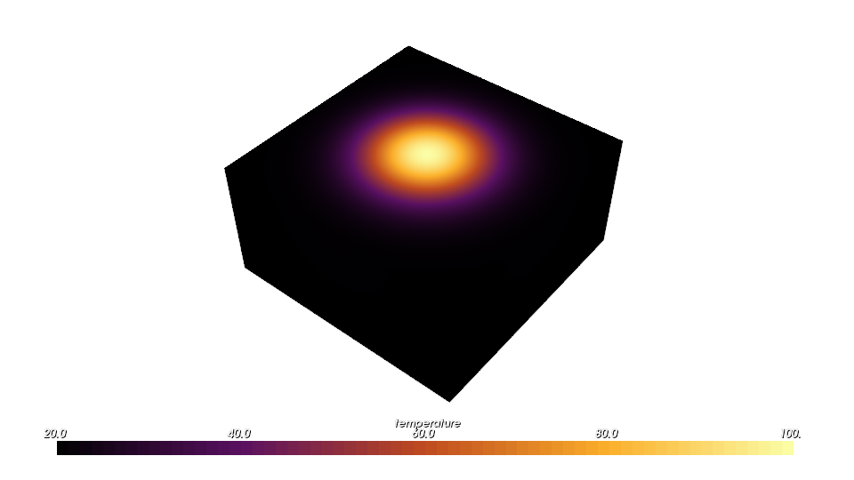
Vector: velocity magnitude
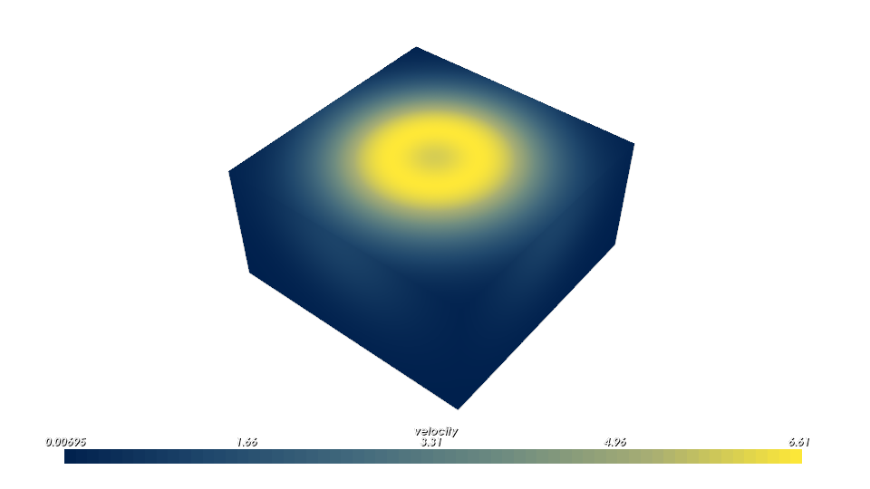
VOLUME_FRACTIONS: red core, blue shell
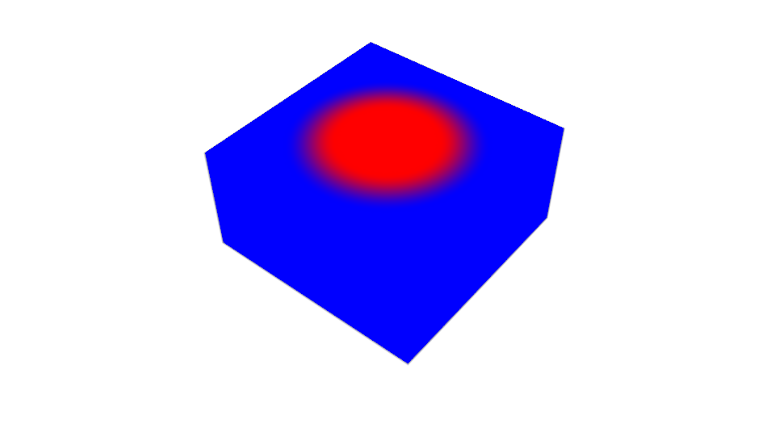
Caching expensive arrays#
If building an array is slow (a large download, heavy preprocessing, a procedural generator), save the finished volume once and load it like any other VDB file:
pv.vdb_loader.save_float_volume(temperature_volume, "temperature.vdb", "temperature")
cached = pv.vdb_loader.load_float_volume("temperature.vdb", "temperature")
pv.vdb_loader.save_vec3s_volume(...) does the same for vector volumes. Each call writes a single named grid, and the saved volume keeps its spacing and placement.
For larger worked examples, see examples/volumes/array/hydrogen_orbital.py (an electron orbital coloured by phase) and examples/volumes/array/logo_cloud/ (a procedural cloud with baked lighting).
Where to Go Next#
Use the patterns in this guide when you want sampled data to participate in normal OpenVCAD attribute workflows.
Use
from_arrayfrom Lesson 5 for any dataset that does not come as VDB, PNG or DICOM.Use the Attribute Modifier and Resolver Guide when you need to translate one field into another.
Use the Color Inkjet Compiler when your final field is
COLOR_RGBAand you want printable PNG slice stacks.